The Dark
Não sei como começar a descrever o que eu sinto, como eu me sinto em dias assim, como na imagem acima. Quem não tem a atração ou sentimento de acolhimento em dias assim, pode simplesmente sentir pra baixo, se sentir com medo, se sentir um pouco triste a até com vontade de dormir, o que por sinal é bom demais em dias de chuva. Mas o que eu sinto é muito subliminar pra eu conseguir descrever com tanta clareza.
Dias nublados me passam uma sensação de que o tempo está parado, de que estamos dentro de um simples teatro e todo esse céu sem vida é um simples e grande chroma key e somos pequenos personagens fazendo nossas simples vidas, nossos pequenos filmes individuais.
Eu percebo que em dias como esse, as pessoas frequentam com menos frequência o seu pequeno comercio na quitanda de frutas alí na rua, que as pessoas saem menos de casa, ficam mais recolhidas em suas casas. Eu sei que pode ser pelo medo de pegar alguma iminente chuva, preparada para aparecer quando menos esperar, ou pode ser por qualquer outro motivo, mas eu sei que o poder que isso impacta nas pessoas é algo maior, algo mais interno e profundo.
Eu assumo que sou uma pessoa bastante introspectiva, não há nada mais agradável que passar um tempo comigo mesmo ou com as poucas pessoas que eu mantenho contato de vez em quando, e é por isso que acredito que dias assim combinam melhor com esse meu lado, que ao mesmo tempo sendo o meu preferido, também pode ser letal e cruel comigo às vezes, como uma brilhante e afiada faca, podendo te proteger mas que nunca promete não te ferir.
tenho algumas fotografias que eu sempre tiro quando me aparece a oportunidade pra deixar aqui.
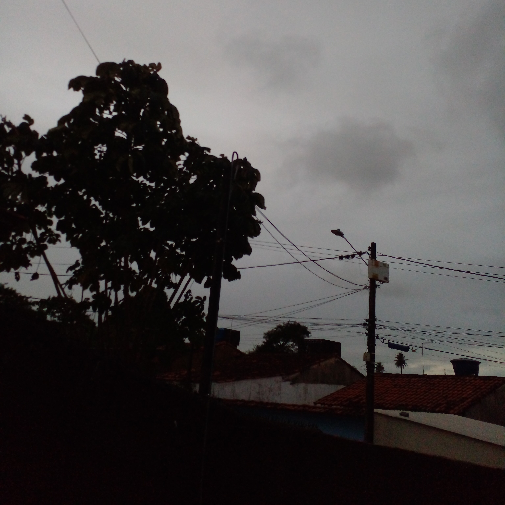
 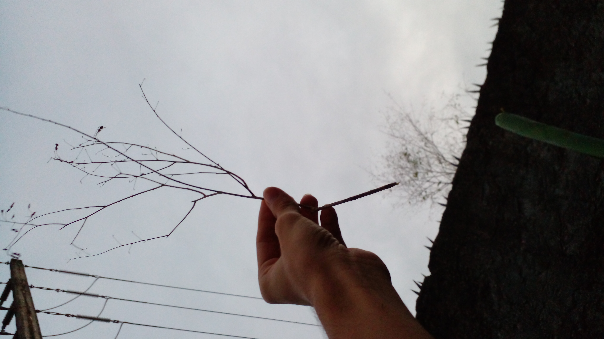
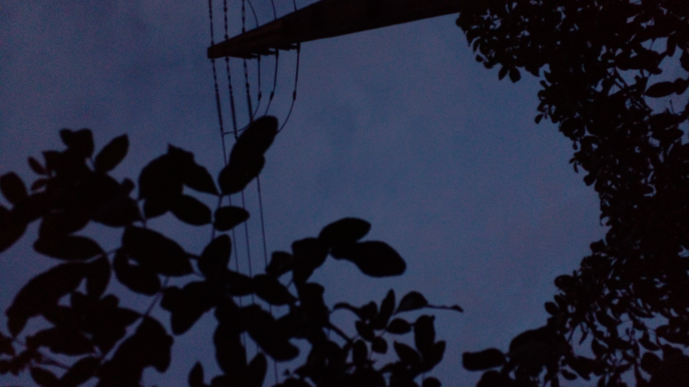
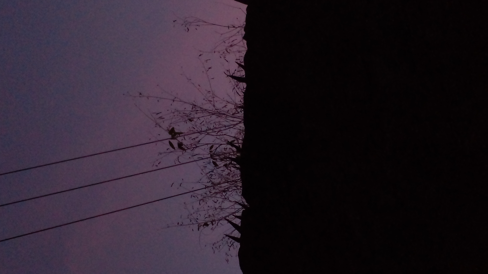
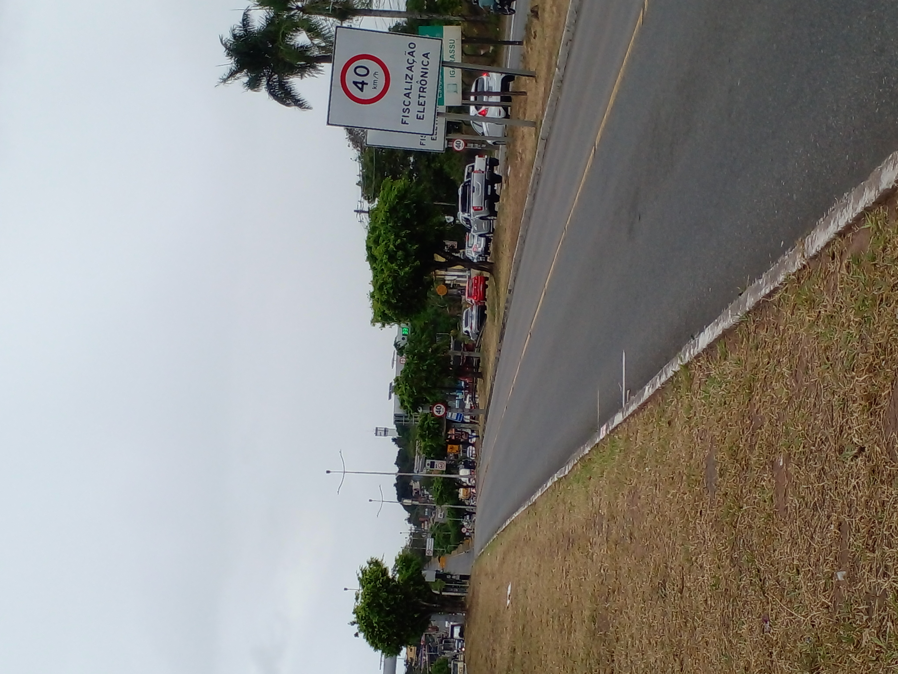
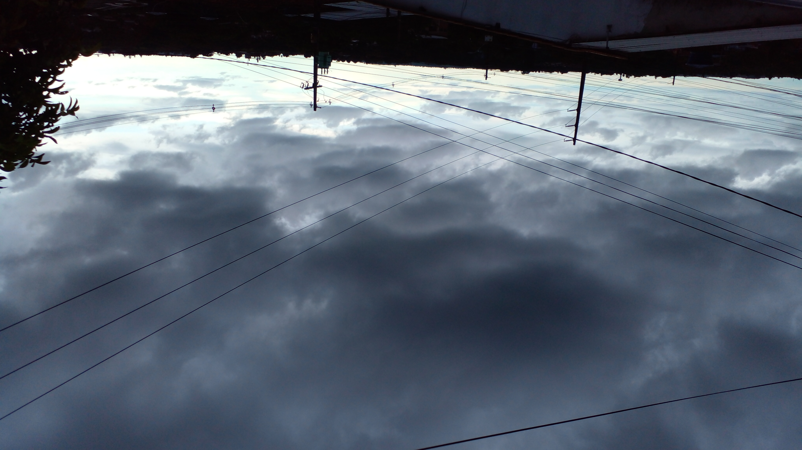
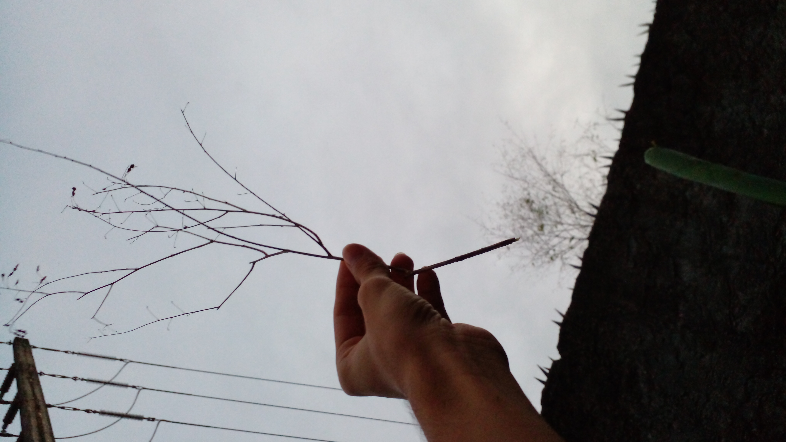
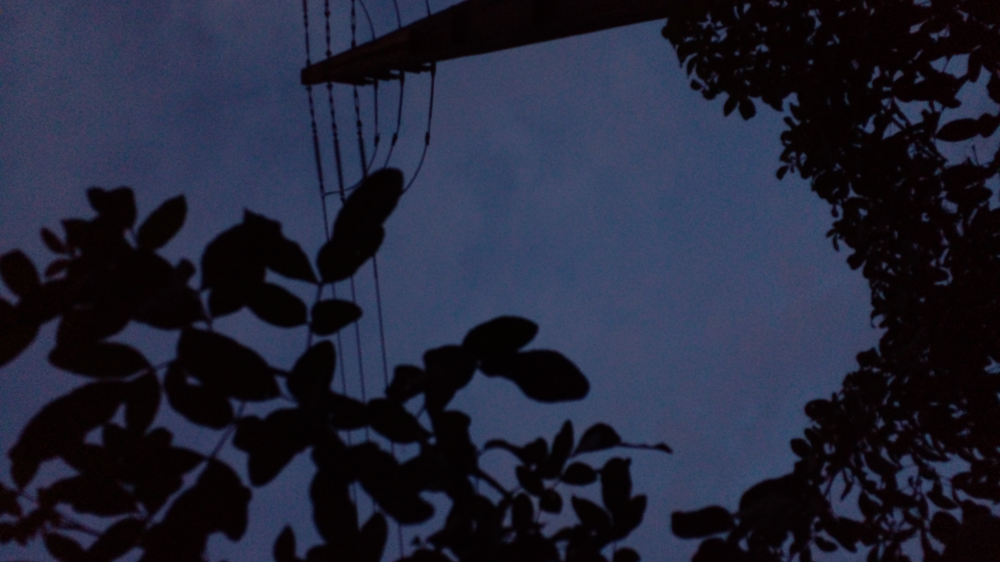
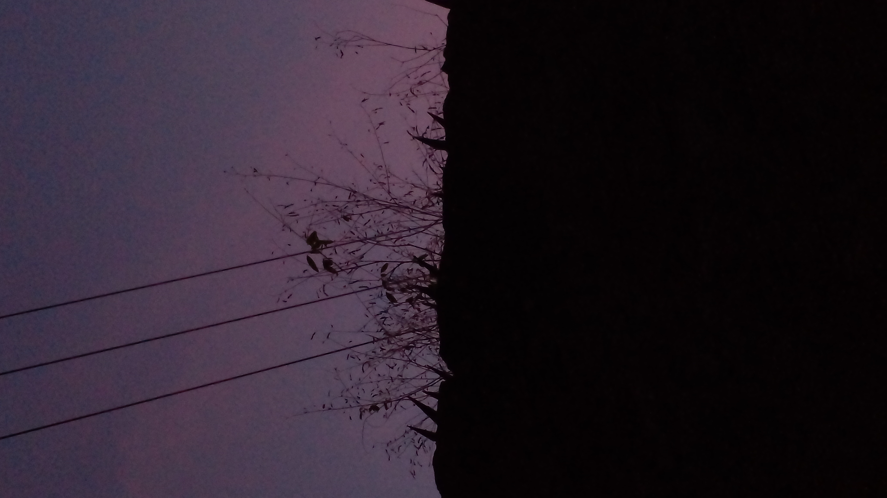
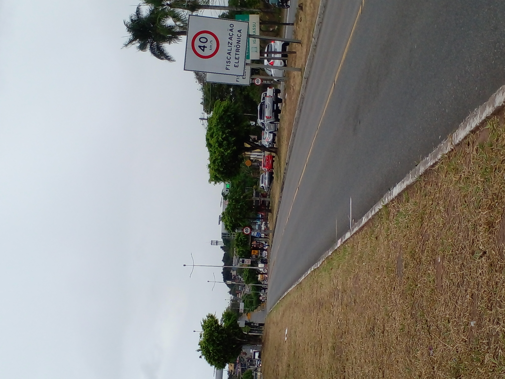
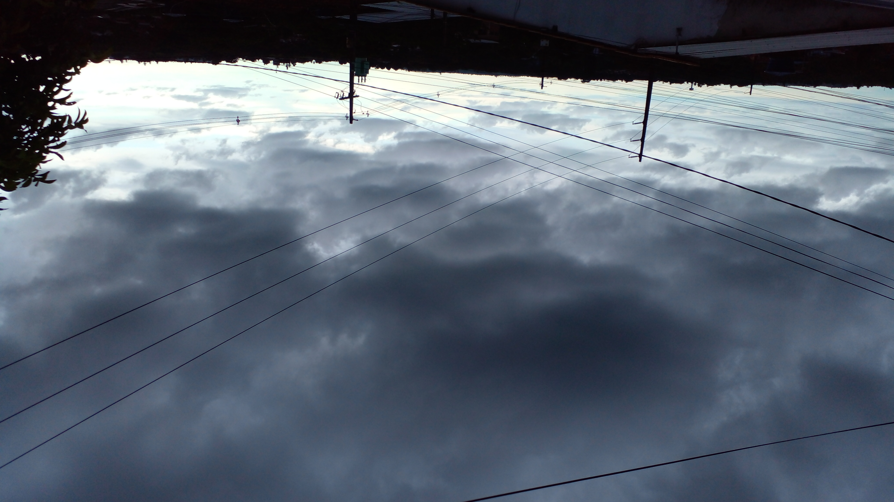